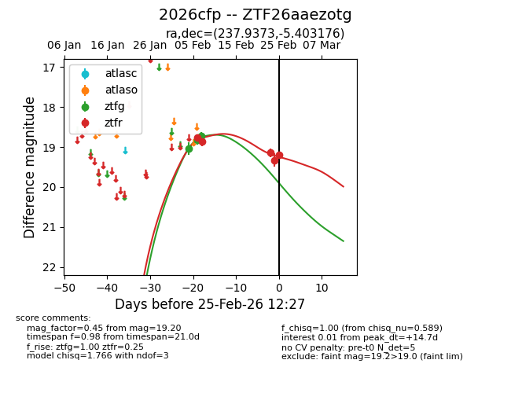
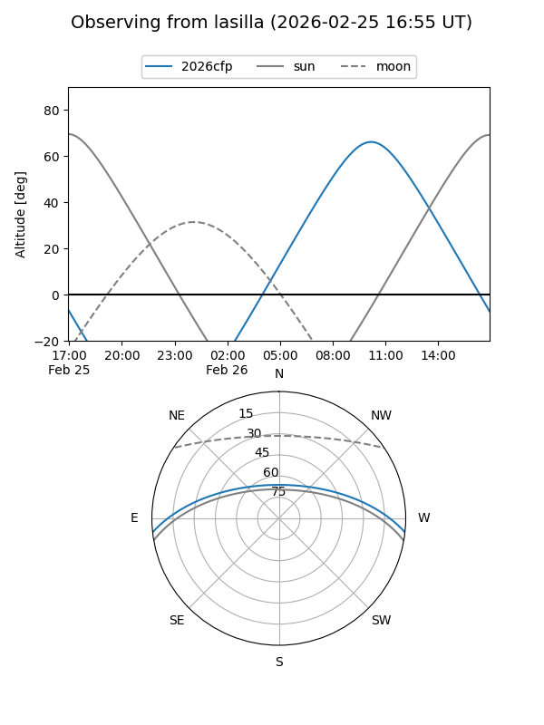
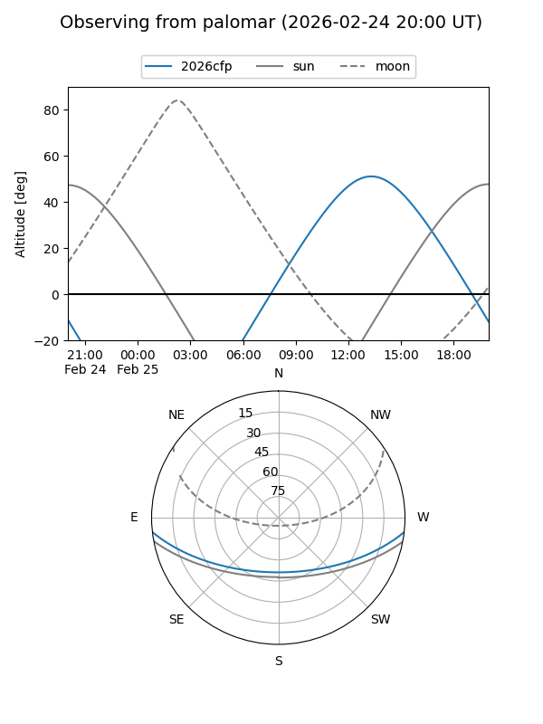
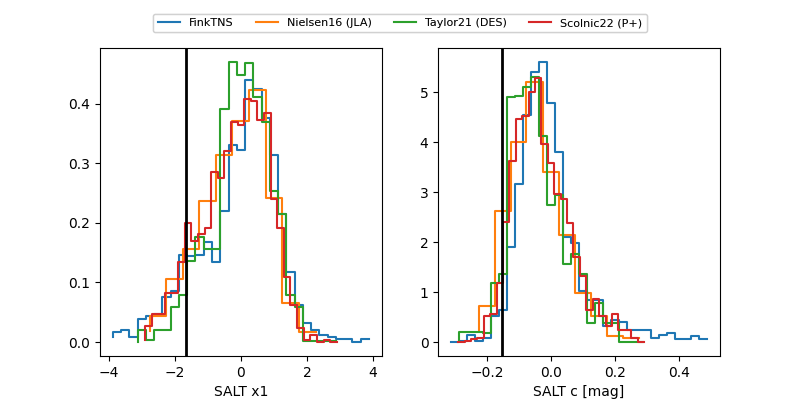

2026cfp
Target 2026cfp at 2026-02-25 12:28
Aliases and brokers:
FINK: link
Lasair: link
ALeRCE: link
TNS: link
YSE: link
alt names
ZTF26aaezotg (ztf,fink_ztf)
2026cfp (tns,yse)
Coordinates:
equatorial (ra, dec) = 237.9373,-5.40318
equatorial (HMS+DMS) = 15:51:44.94,-05:24:11.43
galactic (l, b) = (3.0919,+35.64294)
Flags:
Photometry:
last ztfg=18.73, ztfr=19.20
3 ztfg, 5 ztfr detections
Lightcurve

Visibility


Additional plots
